The Sixth Century BC (BCE) is regarded as an important period in the history of ancient India. As a land mark period in the intellectual and spiritual development in India, historian Will Durant has rightly called it the “shower of stars”.
Literary sources
There were several reasons for the rise of new intellectual awakening. Some of the exploitative practices that paved way for new faiths include:
Jainism is one of the world’s oldest living religions. Jainism grounds itself in 24 Tirthankaras. A Tirthankara, is the one who revealed religious truth at different times. The first Tirthankara was Rishabha and the last one was Mahavira. Jainism gained prominence under the aegis of Mahavira, during the sixth century BC (BCE).
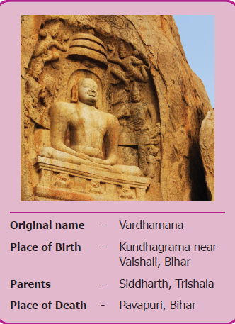
Original name - Vardhamana
Place of Birth - Kundhagrama near
Vaishali, Bihar
Parents - Siddharth, Trishala
Place of Death - Pavapuri, Bihar
Vardhamana, meaning ‘prosperous’, was a kshatriya prince. However, at the age of 30, he renounced his princely status to adopt an ascetic life. He undertook intense meditation.
After twelve and a half years of rigorous penance, Vardhamana attained omniscience or supreme knowledge, known as Kevala.
Omniscience, it is the ability to know everything or be infinitely wise.
Thereafter, he became Jina meaning one who conquered worldly pleasure and attachment. His followers are called Jains. Mahavira reviewed the ancient Sramanic traditions and came up with new doctrines. Therefore, he is believed to be the real founder of Jainism. Unique Teachings of Jainism
Tri–rathnas or Three Jewels
Mahavira exhorted the three – fold path for the attainment of moksha and for the liberation from Karma.
They are
Moksha, Liberation from the cycle of birth and death
Jain Code of Conduct
Mahavira asked his followers to live a virtuous life. In order to live a life filled with sound morals, he preached five major principles to follow.
They are:
Ahimsa - not to injure any living beings
Satya - to speak truth
Asteya - not to steal
Aparigraha - not to own property
Brahmacharya – Celibacy
Digambaras and Svetambaras
Jainism split into two sects.
Digambaras
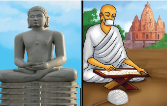
Svetambaras
Reasons for the Spread of Jainism
The following are the main reasons for the wide acceptance of Jainism in India
Influence of Jainism (Samanam) in Tamil Nadu
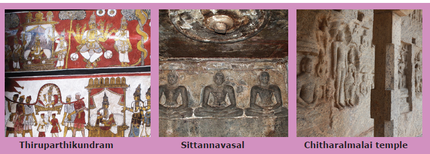
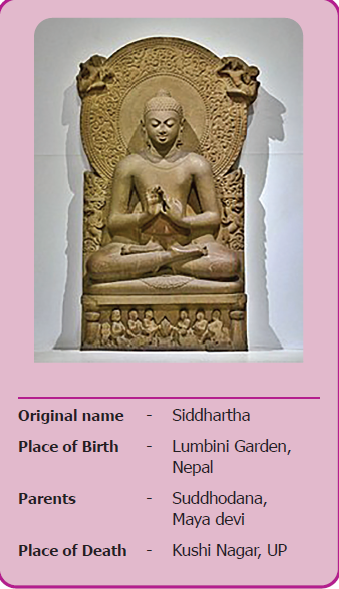
Original name - Siddhartha
Place of Birth - Lumbini Garden,
Nepal
Parents - Suddhodana,
Maya devi
Place of Death - Kushi Nagar, UP
Gautama Buddha was the founder of Buddhism. His real name was Siddhartha. Like Mahavira, he was also a Kshatriya prince belonging to the ruling Sakya clan. When Siddhartha was only seven days old his mother died. So, he was raised by his step mother Gautami.
Four Great Sights
At the age of 29, Siddhartha saw four sorrowful sights. They were:
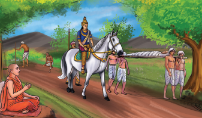
Enlightenment
Buddha, the Awakened or Enlightened One, realised that the human life was full of misery and unhappiness. So, at the age of 29 he left his palace and became a hermit. He sacrificed six years of his life towards penance. Nonetheless deciding that self-mortification was not a path to salvation, Buddha sat under a Pipal tree and undertook a deep meditation near Gaya.
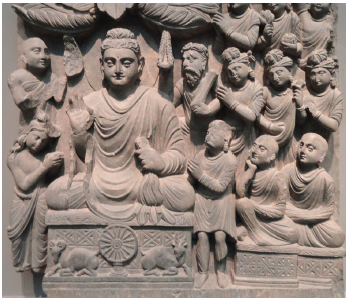
On the 49th day he finally attained enlightenment. From that moment onwards, he was called Buddha or the Enlightened One. He was also known as Sakya Muni or Sage of Sakya clan.
Buddha delivered his first sermon at Deer Park in Sarnath, near Benaras. This was called Dharma Chakra Pravartana or the Turning of the Wheel of Law.
Buddha’s Four Noble Truths
Eight Fold Path
The teachings of Lord Buddha were simple and taught in a language which people used for communication. Since the teachings addressed the everyday concern of the people, they could relate to them. He was opposed to rituals and sacrifices.
Teachings of Buddha
The Wheel of life – represents the Buddhist view of the world.
Buddhist Sangha
Buddha laid foundation for a missionary organization called Sangha, meaning association for the propagation of his faith. The members were called bhikshus (monks). They led a life of austerity.
Hinayana Did not worship idols or images of Buddha. |
Mahayana Worshiped images of Buddha. |
Hinayana Practiced austerity. |
Mahayana Observed elaborate rituals |
Hinayana Believed that Salvation of the individual as its goal. |
Mahayana Believed that salvation of all beings as its objective |
Hinayana Used Prakrit language. |
Mahayana Used Sanskrit language |
Hinayana Hinayana is also known as Theravada. Spread to Sri Lanka, Myanmar (Burma) and South East Asian Countries. |
Mahayana Spread to Central Asia, Tibet, China and Japan where middle path was accepted. |
Causes for the Spread of Buddhism
Middle path – It refers to neither indulging in extreme attachment to worldly pleasure nor committing severe penance.
Dissimilarities
JAINISM It followed extreme path. |
BUDDHISM It followed middle path. |
JAINISM It remained in India only. |
BUDDHISM It spread across many parts of the world. |
JAINISM It does not believe in the existence of god, but believes soul in every living being. |
BUDDHISM It emphasises on ANATMA (no eternal soul) and ANITYA (impernance). |
Buddhist Councils
First – Rajagriha
Second – Vaishali
Third – Pataliputra
Fourth – Kashmir
Influence of Buddhism in Tamilnadu
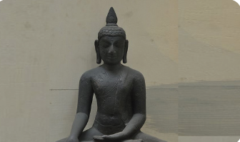
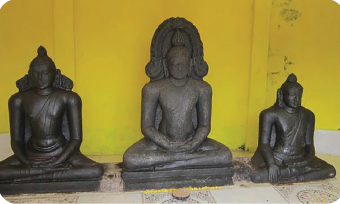
The Jatakas are popular stories about the previous birth and life of Buddha, as human and as an animal. They teach morals.
Once upon a time, there lived a woodpecker and a lion. One day, the lion hunted a big bison and sat down to eat it. It so happened that while having his meal, a big bone got stuck in the lion’s throat. He was not able to remove it and was in great pain.
A kind-hearted woodpecker offered to help the lion. The woodpecker, however, told the lion that he would only take out the bone if the lion promised not to eat him while removing the bone. The lion gladly agreed and opened his mouth in front of the woodpecker. The woodpecker hopped inside the lion’s mouth, and easily pulled out the bone. The lion kept his promise and let the woodpecker fly away.
Soon the lion recovered completely and killed another bison. The woodpecker also thought of joining the lion and asked for a small share of meat. To her utter disappointment the lion blatantly refused to share his meal with her. The Lion said, how dare you ask me for more favours? I have already done so much for you
The woodpecker did not understand what the lion was talking about. The lion then clarified, you should be thankful to me that I did not devour you when you were taking out the bone from my throat. Now do not expect anything else from me and go away. The woodpecker said to himself, “It was indeed a mistake to help such an ungrateful creature, Nevertheless, it is not worth being angry or holding grudge against someone as unworthy as him.
Elsewhere in the world 6th Century BC (BCE)
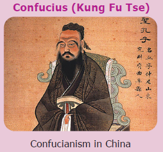
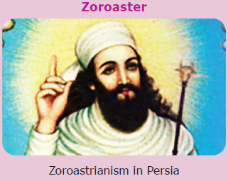
Elsewhere in the world sixth Century BC (BCE)
Superstitious beliefs
belief in things that are not real or possible (மூடநம்பிக்கைகள்)
Preceptor
a teacher or instructor (ஆசான்)
Doctrine
set of principles or beliefs (கோட்பாடு)
Virtuous
having high moral standards (நல்லொழுக்கம்)
Sacred book
holy book (புனித நூல்)
Frescoes
a painting done in water colour on wet plaster (ஈரமான சுவற்றில்வண்ணக் கலவைகொண்டு வரையப்பட்டஓவியங்கள்)
Corpse
a dead body (சடலம்)
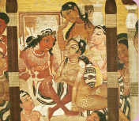
4. Consider the following statements regarding the causes of the origin of Jainism and Buddhism.
I. Sacrificial ceremonies were expensive.
II. Supertitious beliefs and practices confused the common man.
Which of the above statement is or are correct?
a. Only I
b. Only II
c. Both I & II
d. Neither I nor II
5. Which of the following about Jainism is correct?
a. Jainism denies God as the creator of universe.
b. Jainism accepts God as the creator of universe.
c. The basic philosophy of Jainism is idol worship.
d. Jains accept the belief in Last Judgement.
6. Circle the odd one:
Parsava, Mahavira, Buddha, Rishaba
7. Find out the wrong pair:
a. Ahimsa - not to injure
b. Satya - to speak truth
c. Asteya - not to steal
d. Brahmacharya - married status
8. All the following statements are true of Siddhartha Gautama except:
a. He is the founder of Hinduism.
b. He was born in Nepal.
c. He attained Nirvana.
d. He was known as Sakyamuni.
1. The doctrine of Mahavira is called dash.
2. dash is a state of freedom from suffering and rebirth.
3. dash was the founder of Buddhism.
4. Thiruparthikundram, a village in Kanchipuram was once called dash
5. dash were built over the remains of Buddha’s body.
1. Buddha believed in Karma.
2. Buddha had faith in caste system.
3. Gautama Swami compiled the teachings of Mahavira.
4. Viharas are temples.
5. Emperor Ashoka followed Buddhism.
1. Angas - Vardhamana
2. Mahavira - monks
3. Buddha - Buddhist shrine
4. Chaitya - Sakya muni
5. Bhikshus - Jain text
1. What are the Tri-ratnas (three jewels) of Jainism?
2. What are the two sects of Buddhism?
3. What does Jina mean?
4. Write any two common features of Buddhism and Jainism.
5. Write a note on Buddhist Sangha.
6. Name the Chinese traveler who visited Kancheepuram in seventh century AD(CE).
7. Name the female jain monk mentioned in Silapathikaram.
1. Name the eight-fold path of Buddhism?
2. What are the five important rules of conduct in Jainism?
3. Narrate four noble truths of Buddha?
4. Write any three differences between Hinayana and Mahayana sects of Buddhism?
5. Jainism and Buddhism flourished in Sangam period. Give any two evidences for each.
1. Karma – a person’s action. Name any 10 good actions (deeds).
1. Read any one story from Jatakas and write a similar story on your own.
2. Make a tabular column in the following headings.
Religion |
Name of the founder with picture |
Name of their parents |
Key Principle (any one) |
Sects |
Symbol |
|
|
|
|
|
|
|
|
|
|
|
|
3. Place the following words in the appropriate column.
Words: Jina, Mahayana, Tirthankaras, Stupas Nirvana, Digambara, Tripitakas, Agama
Jainism |
Buddhism |
4. Task cards activity:
Make informative cards for the following religions. Hinduism, Christianity, Islam, Buddhism, Jainism
5. Make a Venn diagram to indicate similarities and dis-similarities of Jainism and Buddhism.
6. Solve the puzzle
Left to right
1. One of the Tri Rathna: Right
2. Buddha’s teachings are referred as
3. A great centre of education
4. The place where Buddha attained enlightment
5. Not to injure any living being
Right to left
6. Mother of Siddhartha
7. The Quality of man’s life depends on his deed
Top to bottom
8. Lumbini is in
9. Buddhist prayer hall
10. A state of freedom from birth
11. Jain scripture compiled by Gautama Swami.
Create a story board for Jainism and Buddhism in a chart
Early life 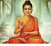 |
Four Noble Truths |
Eight - Fold Path |
Teachings of Buddha 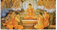 |
Buddhist Sangha |
Buddhist Sects |
The Jain monks who wear white clothes are called Answer dash |
What is the meaning of Buddha? |
Who is the 24th Tirthankara of Jainism? Answer dash |
Who delivered Dharmachakra Pravartana? Answer dash
|
How many noble truths are there in Buddhism? Answer dash
|
Which religion’s teachings include four noble truth and eight-fold path? Answer dash |
Name the earliest Buddhist literature which deals with the stories of various births of Buddha? Answer dash |
Name any four places where Jain monasteries were located in Tamil Nadu. Answer dash
|
Name one of the twin Indian's Epics Answer dash |